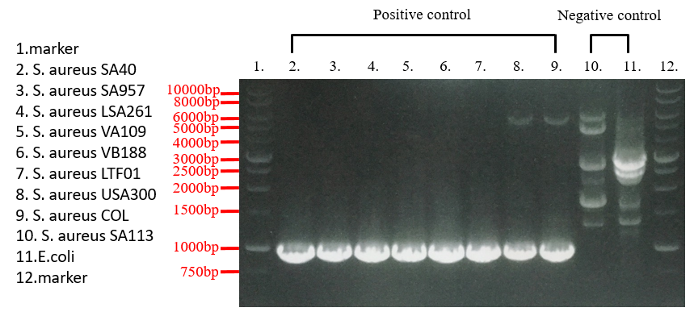
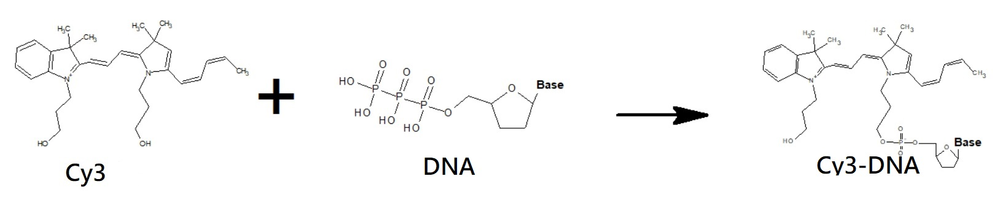
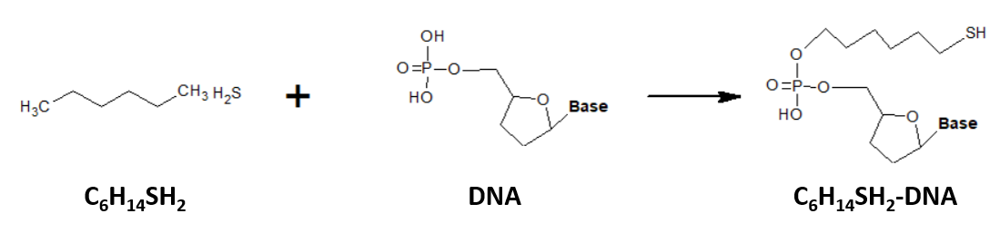
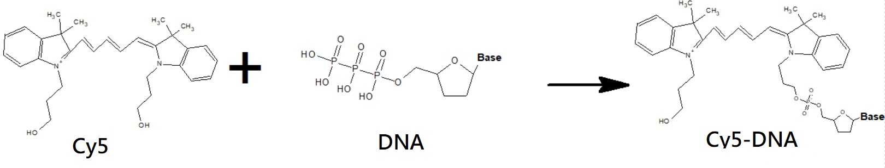
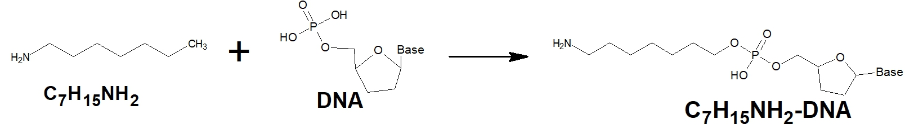

Methicillin-resistant Staphylococcus aureus (MRSA) is a major pathogen in hospitals and the community. It causes a wide range of infections affecting the superficial skin and soft tissue, as well invasive infections including pneumonia, bloodstream infections, bone and joint infections.
With a single electrode, DNA biosensor can detect a DNA fragment only 16-30 mer, limiting by the length of probe. However, based on the properties that electron can transfer through DNA, we use two electrodes which binding the same length of probe as single electrode. It can detect more than 1000 mer by analyzing the conductance. Besides, the target DNA need to hybridize with two different probe to let electron transfer through DNA.
Before we extraction the genomic DNA we want, we need to culture the bacteria first. We transfer the bacteria culture to the 40 ml centrifuge tube and culture it overnight ( 16-18 hours ). Alter 1 ml bacteria culture to 1.5 ml microcentrifuge tube then centrifuge a 1000 rpm at 25 ℃ for 1 minute. Add 100 ul TE buffer to the tube and pipetting the pellet until there is no suspension. Add 20 ul 100 mg/ml lysozyme and 10 mg/ml lysostaphin mixture to the tube then put the tube into the 37 ℃ incubator for 60 minutes and gently shake it every 10 minutes.
After taking out, add 300 ul cell lysis buffer to break the cell membrane and put in the 60 ℃ incubator and gently shake it every 3 minutes, and cool down for 5 minutes. Add 1.5 ul RNase A and put at room temperature for 5 minutes to remove the RNA. Add 100 ul protein remove buffer and put it on the ice for 10 minutes and precool the centrifuge 10 minutes too. Centrifuge at 13000 rpm for 10 minutes at 4 ℃
Place the supernatant to a new 1.5 ml microcentrifuge tube and add 300 ul isopropanol and centrifuge at 13000 for 5 minutes at 4 ℃, then remove the supernatant. Add 300 ul 70 % ethanol and centrifuge for 3 minutes at 25 ℃ then drain it at vacuum environment until there is no ethanol in the tube. Add 100 ul DNA hydration buffer and put in the 60 ℃ incubator for 60 minutes and we will finish the genomic DNA extraction.
Before running the qPCR machine, we have to blend unknown amount of tubes which contain 1 ul DNA sample, 10 ul KAPA SYBR ® FAST qPCR Master Mix (2X), 0.4 ul forward primer, 0.4 ul reverse primer, 0.4 ul KAPA SYBR ® FAST ROX Low Reference Dye (50X), and 7.8 ul DEPC water per tube. The kinds of DNA and primers will decide the amount of how many tubes we need to run the machine. After deploying the solution, set the machine and run it about 3 hours then will show out the result.
The PCR experiment needs four kinds of materials, DNA sample, 2x master mix, forward primer, reverse primer and water. Mixing the material in the proportion that DNA 1ul,2x master mix 10ul,primer 0.5ul and water 8ul.Total volume is 20ul. Raising the temperature to 94°C after mixing the sample. It will make DNA be denatured. Denaturation takes 30 seconds in one cycle. After denaturing, decline the temperature to 55°C. Primers will annealing to the single strand at this temperature. The step will takes 30 seconds. Finally, raising the temperature to 72°C. At this time, the DNA polymerase and dNTPs in the 2x master mix will extend the complementary DNA. The extension time is according to the distance between the forward primer and reverse primer. For example, the mecA fragment with 2000bp will takes about 2 minutes and 500bp will takes 1 minutes. After doing these steps for 30 cycles, the length of PCR product can be checked by electrophoresis. After loading the PCR product to the 1.5% agarsoe gel, we use 120V to check the result.
After PCR, we have to extract the product ( gel ) to ensure the size of the DNA is correct. First, cut down the gel which contain the band we want and transfer it to a 1.5 ml microcentrifuge tube, add 500 ul buffer B and vortex until the gel dissolve then put in the 60 ℃ incubator for 10 minutes and vortex it per 3 minutes. After 10 minutes, cool down and place the fluid the PG column and centrifuge at 14000 rcf for 30 seconds then remove the supernatant. Add buffer W1 and centrifuge at 14000 rcf for 30 seconds, and remove the supernatant. Add 600 ul buffer W2 and centrifuge at 14000 rcf for 30 seconds, and remove the supernatant. Centrifuge at 14000 rcf for 2 minutes and put the PG column in a new 1.5 ml microcentrifuge tube. Add 50 ul preheat ddH2O and put at the heating plate for 5 minutes at 55 ℃. Final, centrifuge at 14000 rcf for 3 minutes and the step of extraction is done.
strand 1: 5' HSC6-AAAATCGATGGTAAAGGTTGGCAAAAAGATAAA-Cy3 3'
strand 2: 5' Cy5-AACTACGGTAACATTGATCGCAACGTTCAATTT-AminoC7 3'
